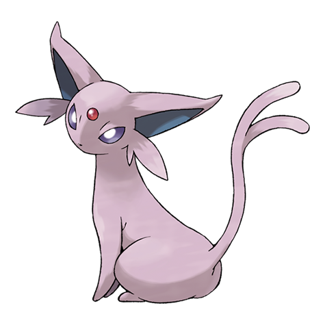

#0133
 イーブイ
ノーマル
イーブイ
ノーマル
ここがすべての出発点。種族値合計325。
8つの進化 · 石5種 · なつき3系統
イーブイは8種類のポケモンに進化し、どの枝も元には戻れません。だからこそ選択そのものが勝負です。このページでは8つの進化を横に並べ、タイプ、種族値の全体、各形態を起こす正確な方法、そして自分のパーティに合うのはどれかをまとめています。
ひとつのイーブイ · 8つの未来
イーブイは答えをひとつに絞りません。8方向へ同時に枝分かれし、選んだ枝は戻せない。だから下の9枚がそのまま判断材料になります。どの姿が何になるか、そこへ行くのに何が要るか。
イーブイ
ノーマル
ここがすべての出発点。種族値合計325。
 シャワーズ
みず
シャワーズ
みず
みずのいし。レベルは問わない。
 サンダース
でんき
サンダース
でんき
かみなりのいし。レベルは問わない。
 ブースター
ほのお
ブースター
ほのお
ほのおのいし。レベルは問わない。

エーフィ エスパーなつき度を上げて、昼にレベルアップ。
 ブラッキー
あく
ブラッキー
あく
なつき度を上げて、夜にレベルアップ。
 リーフィア
くさ
リーフィア
くさ
今はリーフのいし。旧作はコケむした岩。
 グレイシア
こおり
グレイシア
こおり
今はこおりのいし。旧作はこおりの岩。
 ニンフィア
フェアリー
ニンフィア
フェアリー
なつき度＋フェアリーわざでレベルアップ。
リファレンス
一族のどの姿も種族値合計は525で同じです。8つの進化は上を目指す一本道ではなく、横に並んだ選択肢。変わるのはポイントの置き場所と、どちらのエンジンが動くか。進化の石か、なつき度かです。下の表が一族の全体像で、進化の方法の内訳はそのあとに続きます。
| 進化後 | タイプ | 種族値合計 | 得意な種族値 | 進化の方法 |
|---|---|---|---|---|
| シャワーズ | みず | 525 | HP 130 | みずのいし |
| サンダース | でんき | 525 | 素早さ 130 | かみなりのいし |
| ブースター | ほのお | 525 | 攻撃 130 | ほのおのいし |
| エーフィ | エスパー | 525 | 特攻 130 | なつき度を高くして、昼にレベルアップ |
| ブラッキー | あく | 525 | 特防 130 | なつき度を高くして、夜にレベルアップ |
| リーフィア | くさ | 525 | 防御 130 | リーフのいし |
| グレイシア | こおり | 525 | 特攻 130 | こおりのいし |
| ニンフィア | フェアリー | 525 | 特防 130 | なつき度を高くして、フェアリーわざを覚えた状態でレベルアップ |
特技が重なる姿もあります。エーフィとグレイシアはどちらも特攻130。二択で迷ったときは、種族値の全体像が2体を分けてくれます。ここではイーブイの進化すべての種族値と、比較用にイーブイ自身も並べます。
| 姿 | HP | 攻撃 | 防御 | 特攻 | 特防 | 素早さ | 合計 |
|---|---|---|---|---|---|---|---|
| イーブイ | 55 | 55 | 50 | 45 | 65 | 55 | 325 |
| シャワーズ | 130 | 65 | 60 | 110 | 95 | 65 | 525 |
| サンダース | 65 | 65 | 60 | 110 | 95 | 130 | 525 |
| ブースター | 65 | 130 | 60 | 95 | 110 | 65 | 525 |
| エーフィ | 65 | 65 | 60 | 130 | 95 | 110 | 525 |
| ブラッキー | 95 | 65 | 110 | 60 | 130 | 65 | 525 |
| リーフィア | 65 | 110 | 130 | 60 | 65 | 95 | 525 |
| グレイシア | 65 | 60 | 110 | 130 | 95 | 65 | 525 |
| ニンフィア | 95 | 65 | 65 | 110 | 130 | 60 | 525 |
この表から2つの傾向が見えます。1つ目、どの進化も合計はちょうど525。イーブイ自身は325で、200ポイント下です。進化が仕上げではなく判断として読めるのはそのためです。2つ目、8体がそれぞれ1つの種族値をちょうど130に固定していて、合わせると6つの種族値をすべて覆います。HPはシャワーズ、攻撃はブースター、防御はリーフィア、特攻はエーフィとグレイシア、特防はブラッキーとニンフィア、素早さはサンダース。パーティの穴を言えば、8体のどれかがそのために設計されています。
いちばんきれいに分かれるのは素早さです。サンダースが素早さ130で先手を取り、エーフィが110で続き、リーフィアが95ですぐ後ろ。この3体は先に打つことを前提に組まれています。残りの5体は60から65に集まっていて、これはわざと遅い数字です。先に殴られる側の一族で、テンポの代わりに耐久、回復、状態異常の支援で返します。
進化の方法
シャワーズ、サンダース、ブースターは最初のゲームからずっと、道具1つぶんの距離にいました。イーブイにみずのいし、かみなりのいし、ほのおのいしを使えば、その場で進化します。届けるべきレベルも、積むべきなつき度もありません。最初の3体は、一族のなかでいちばん操りやすい枝です。この3体のどれかが欲しいと決まっているなら、石をバッグに入れておいて、良いタイミングで使ってください。結果はどのレベルでも同じです。
エーフィとブラッキーは、道具ではなく信頼で動きます。普通に遊ぶなかでイーブイのなつき度を上げてください。バトル、レベルアップ、手持ちでの散歩。そのうえで、昼にもう一度レベルアップすればエーフィ、夜ならブラッキーです。分かれ目を時計が決めるので、この2体は「いつ育てるか」で選ぶ進化になります。どちらも辛抱に応えてくれて、エーフィの特攻130とブラッキーの特防130は、一族でもっともきれいな種族値のひとつです。知っておきたい落とし穴が1つ。第6世代以降のゲームでは、そのレベルアップの時点でフェアリーわざを覚えていると、時間帯に関係なくニンフィアになります。エーフィかブラッキーが欲しいなら、先にフェアリーわざを忘れさせてください。
リーフィアとグレイシアは第4世代、場所で進化する形で登場しました。苔むした岩や凍った岩のそばでイーブイを育てて、進化させる形です。新しいゲームではどちらも普通の道具に整理され、リーフのいしとこおりのいしで、どこでも進化できるようになりました。一族のくさとこおりの未来も、ほかの石と同じポケットに入ったわけです。古い作品を遊び直すなら岩の条件はそのまま生きていますが、それ以外では石を持っていってください。
ニンフィアは最新の枝で、いちばん気難しい1体です。イーブイのなつき度が高く、そのとき覚えているわざにフェアリー技がある状態で、レベルアップすれば決まります。判定はレベルアップの瞬間なので、旅の途中でも操作できます。わざを先に覚えさせ、なつき度を高く保っておけば、フェアリーの道はゲームの都合ではなく自分の予定に合わせて開きます。
イーブイは複数の枝の条件を同時に満たすことがあり、ゲームはどれを狙っているかを聞いてきません。決まった順番で処理されるため、狙っていないニンフィアが生まれる、という事故が起きます。
| レベルアップした瞬間の状態 | 出てくる姿 | 狙いを変える方法 |
|---|---|---|
| なつき度が高く、フェアリーわざを覚えていて、コケむした岩かこおりの岩のそばにいる | リーフィアかグレイシア | 岩が優先。ニンフィアが欲しいなら先にその場を離れる |
| なつき度が高く、フェアリーわざを覚えていて、昼 | エーフィではなくニンフィア | レベルアップの前にフェアリーわざを忘れさせる |
| なつき度が高く、フェアリーわざを覚えていて、夜 | ブラッキーではなくニンフィア | 対処は同じ。決めるのは時計ではなくわざ |
ソフトごとに
8つの姿は第6世代からすべて存在しますが、リーフィアとグレイシアへの道は第8世代で石に切り替わり、古いソフトでは枝ごと塞がれています。番号の列はそのソフトでのイーブイの図鑑番号で、捕まえに行くときに探す数字です。発売日の一覧はポケモン発売日カレンダーにまとめています。
| ソフト | イーブイの図鑑番号 | 進化できる数 | 補足 |
|---|---|---|---|
| 赤・緑・青・ピカチュウ | 0133 | 3 | シャワーズ、サンダース、ブースターのみ。残り5種はまだ存在しない |
| 金・銀・クリスタル | 0180 | 5 | エーフィとブラッキーが加わる。なつき度を上げて、昼か夜にレベルアップ |
| ファイアレッド・リーフグリーン | 0133 | 3 | 昼夜の概念がないため、なつき度の2種は動かない |
| ダイヤモンド・パール・プラチナ | 0163 | 7 | ハクタイのもりのコケむした岩、217ばんどうろのこおりの岩。ニンフィアはまだいない |
| ハートゴールド・ソウルシルバー | 0184 | 5 | ジョウトにコケむした岩とこおりの岩がないため、リーフィアとグレイシアは不可 |
| ブラック2・ホワイト2 | 0091 | 7 | ヤグルマの森のコケむした岩、ネジ山のこおりの岩 |
| X・Y | 0077 | 8 | 8種が揃う最初のソフト。ニンフィアはここで初登場 |
| サン・ムーン | 0123 | 8 | リーフィアはシェードジャングル、グレイシアはラナキラマウンテン |
| ウルトラサン・ウルトラムーン | 0153 | 8 | 場所はサン・ムーンと同じ |
| Let's Go! ピカチュウ・Let's Go! イーブイ | 0133 | 3 | 相棒のイーブイは進化できない。野生のイーブイも石の3種どまり |
| ソード・シールド | 0196 | 8 | リーフのいしとこおりのいしが、岩に取って代わる |
| 冠の雪原（ソード・シールドの追加コンテンツ） | 0074 | 8 | 本編と同じルール |
| ブリリアントダイヤモンド・シャイニングパール | — | 7 | 岩の方式は残るが、ニンフィアは図鑑にいない |
| LEGENDS アルセウス | 0025 | 8 | 石となつき度の両方が使え、岩もマップに残っている |
| スカーレット・バイオレット | 0179 | 8 | 5種は石、残り3種はなつき度 |
| LEGENDS Z-A | 0100 | 8 | スカーレット・バイオレットと同じ、石となつき度のルール |
間違えられやすいのがこの数字です。世代の変わり目で下がっているのに、古い攻略記事はどのソフトでも220と書いたままになっています。現行のソフトが求めているのは160です。
| 世代 | 必要ななつき度 | ニンフィアの追加条件 |
|---|---|---|
| 第2〜第5世代 | 220 | ニンフィアはまだ存在しない |
| 第6・第7世代 | 220 | ポケパルレかポケリフレでハート2つ以上、さらにフェアリーわざ |
| 第8世代以降 | 160 | レベルアップの時点でフェアリーわざを覚えていること |
Pokemon GO
GOには石がありません。進化はアメで払い、どの姿になるかは相棒の距離、モジュール、ハートの数で決まります。いちばん速いのはニックネーム技ですが、名前ひとつにつき1回きり、アカウントで一度だけです。
| 姿 | 必要なもの | ニックネーム（1回だけ） | 注意 |
|---|---|---|---|
| シャワーズ | イーブイのアメ25個 | Rainer | ニックネームなしだとサンダース・ブースターとの3択 |
| サンダース | イーブイのアメ25個 | Sparky | シャワーズと同じ3択 |
| ブースター | イーブイのアメ25個 | Pyro | シャワーズと同じ3択 |
| エーフィ | 相棒にして10km歩き、アメ2個を受け取ってから昼に進化 | Sakura | 10kmを歩き終える前に進化させない |
| ブラッキー | 同じく10km歩いて、夜に進化 | Tamao | 昼夜は端末の時計で決まる |
| リーフィア | コケモジュールの範囲内で進化 | Linnea | モジュールが起動中で、自分が範囲内にいること |
| グレイシア | こおりモジュールの範囲内で進化 | Rea | リーフィアと同じ条件 |
| ニンフィア | なかよしハートを70個 | Kira | 8種のなかで最も時間がかかる |
パーティとの相性
まず役割で選んでください。ブースターは物理側から攻め、リーフィアは防御の席からダメージを出しつつ物理を受け止め、サンダースは素早さ130を圧力に変えます。特殊側ではエーフィ、グレイシア、シャワーズが大きな数字を持ち、ブラッキーとニンフィアは一族のなかでも特殊攻撃の受けが出色です。
8体は種族値合計が同じなので、差が出るのはタイプ相性の行です。完全無効を持つのは2体だけで、特定のタイプに崩されているときに選ばれるのもその2体です。18タイプの全体表は、次のタイプ相性表にまとめています。
| 姿 | タイプ | 弱点（2倍） | 半減 | 無効 |
|---|---|---|---|---|
| シャワーズ | みず | でんき、くさ | ほのお、みず、こおり、はがね | — |
| サンダース | でんき | じめん | でんき、ひこう、はがね | — |
| ブースター | ほのお | みず、じめん、いわ | ほのお、くさ、こおり、むし、はがね、フェアリー | — |
| エーフィ | エスパー | むし、ゴースト、あく | かくとう、エスパー | — |
| ブラッキー | あく | かくとう、むし、フェアリー | ゴースト、あく | エスパー |
| リーフィア | くさ | ほのお、こおり、どく、ひこう、むし | みず、でんき、くさ、じめん | — |
| グレイシア | こおり | ほのお、かくとう、いわ、はがね | こおり | — |
| ニンフィア | フェアリー | どく、はがね | かくとう、むし、あく | ドラゴン |
次にタイプで穴を埋めます。シャワーズのちょすいとサンダースのちくでんは、みずわざとでんきわざを回復に変えます。ブースターのもらいびも、ほのおを同じように食べます。8体のうち3体が、種族値を1つ数える前にパーティの穴を埋めてくれるわけです。ニンフィアはフェアリータイプそのものを足します。候補が2体まで絞れたら、 タイプ相性表 がたいてい決めてくれます。形ができたら、 パーティ編成で試してください。イーブイ自体がまだ来ていないなら、 ランダム選出 が1体、その場で引いてくれます。
姿が決まったら、最後の調整が1つ。 ポケモン性格表 に、各進化が求める性格が並んでいます。ここを合わせるのは、上の表で配った種族値すべてに対する無料の上乗せです。本体のデータは、 イーブイ のページに、種族値・特性・相性がまとまっています。 ブラッキー のページは守り寄りの枝を掘り下げ、 ニンフィア のページはフェアリー側を同じように扱っています。 エーフィ のページは8体のなかの特殊アタッカーを紹介しています。
よくある質問
8種類です。シャワーズ（みず）、サンダース（でんき）、ブースター（ほのお）、エーフィ（エスパー）、ブラッキー（あく）、リーフィア（くさ）、グレイシア（こおり）、ニンフィア（フェアリー）。ファンが「ブイズ」と呼ぶ顔ぶれですね。タイプが重なる2体はなく、どの枝も違う相性を担当します。イーブイ自身はノーマルタイプから始まります。
8つのうち5つは進化の石です。みずのいし・かみなりのいし・ほのおのいし・リーフのいし・こおりのいしで、シャワーズ、サンダース、ブースター、リーフィア、グレイシアになります。残り3つはなつき度で、昼にレベルアップすればエーフィ、夜ならブラッキー、フェアリーわざを覚えていればニンフィアです。レベルだけではイーブイは進化しません。レベルアップは、なつき度ルートでの最後の引き金にすぎないのです。
設計上、単独の最強はありません。8体とも種族値合計525で同じです。正解は、130に固定したい種族値がどれかになります。物理側でいちばん強く殴るのはブースター、特殊側はエーフィとグレイシア、速いのはサンダース、特殊の壁はブラッキーとニンフィア、HPはシャワーズ、防御はリーフィアです。
パーティの穴に合わせてください。速さが欲しいならサンダースかエーフィ、壁が欲しいならブラッキーかニンフィア、ちょすいによる回復込みの耐久が欲しいならシャワーズです。上の種族値表が議論のすべて。自分の手持ちに欠けている列を選んでください。
いいえ。どの枝も一度進むと元に戻れず、シャワーズをイーブイに戻す道具もわざもありません。その不可逆さがあるからこそ、選択はゆっくり考える価値がありますし、バッグのなかの石は飾りではなく判断になるわけです。
どの姿にも色違いの配色があり、1体のイーブイが8つのどれにもなれるので、色違い狙いの人は狩る前に的を決めます。それが目的なら、ランダム色違い生成が確率と方法を扱っています。
はい。8はポケモンとしての記録で、ここまで枝分かれする一族はほかにありません。分岐進化の多くは2〜3形態で止まります。進化先の選択そのものが種の特徴になっているのは、イーブイだけです。
レベルはありません。イーブイはレベル条件を求めない、数少ないポケモンの1つです。「レベル」に見えるものは、なつきルートの最後の一段です。なつき度が最大になったら（必要値は世代で違います。下で触れます）、その次のレベルアップがエーフィ・ブラッキー・ニンフィアの引き金になります。石の5体はそれを全部飛ばします。道具を使った瞬間に進化します。
いいえ。ニンフィアが第6世代に登場してから、数は8のまま動いていません。そのあとのゲームで9本目の枝が増えたこともありません。18タイプのうち10タイプには、いまもイーブイの姿がありません。ドラゴンタイプを望む声は年々大きくなっていますが、公式の発表は一度もありません。ネットで見かける新しいブイズは、ゲームが認めるまではファンアートとして扱ってください。
8種類で、ニンフィアが第6世代に登場してからこの数は動いていません。簡単なのは数え方のほうで、つまずくのは形のほうです。イーブイは1つの答えへ向かって一本道を歩きません。一度に8方向へ分かれ、1体につき最終形態は1つ。その先へ進化するものはありません。
第1世代で3体が同時に登場しました。シャワーズ、サンダース、ブースターです。だから「最初の1体」は存在しません。エーフィとブラッキーが第2世代、リーフィアとグレイシアが第4世代、ニンフィアが第6世代で続きます。
はい、しかも違いは引っかかりやすいところにあります。安定しているのは石の3体で、みずのいし・かみなりのいし・ほのおのいしは第1世代からずっと同じです。なつきルートは緩くなりました。必要値は古いゲームの220前後から、ソード・シールド以降は160前後へ下がり、レベルアップの時間帯は昼か夜で指定します。ニンフィアはさらにフェアリーわざが要ります。リーフィアとグレイシアは、以前は苔むした岩や凍った岩の近くでのレベルアップが必要でしたが、新しいゲームではリーフのいしやこおりのいしが使えます。Let's Goは石の3体だけを残し、相棒のイーブイはそもそも進化できません。Pokemon GOはアメ、相棒のハート、ルアーモジュールで動いています。
現行のソフトなら可能です。石が手に入り、なつき度を積む時間さえあれば、1本のなかで8体までたどり着けます。第5世代以前のソフトは枝そのものが少ないので、そもそも8体にはなりません。確実なのはソード・シールド以降です。
フェアリーわざが時計を上書きするからです。なつき度が足りていてフェアリーわざを覚えていると、昼でも夜でもレベルアップでニンフィアになり、エーフィやブラッキーに出番が回りません。レベルアップの前にフェアリーわざを忘れさせれば、昼夜の分岐は元どおり動きます。
まるで違います。GOに石はなく、代わりにアメが要ります。さらに8種のうち6種は、相棒の距離、ルアーモジュール、ハートの数といった条件で分かれます。イーブイにRainer、Sparky、Pyro、Sakura、Tamao、Linnea、Rea、Kiraのいずれかを名付けると対応する姿に固定できますが、1アカウントにつき1回だけ。以降は地道に条件を満たすことになります。